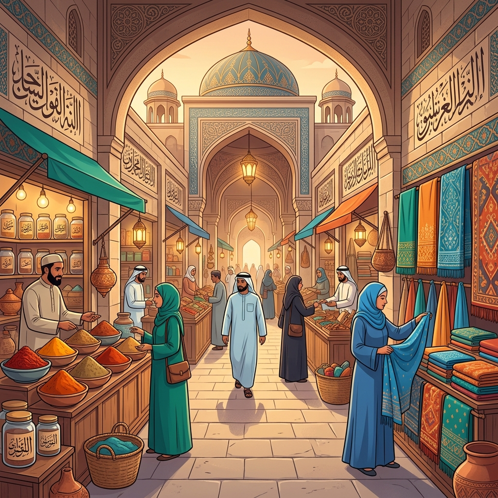
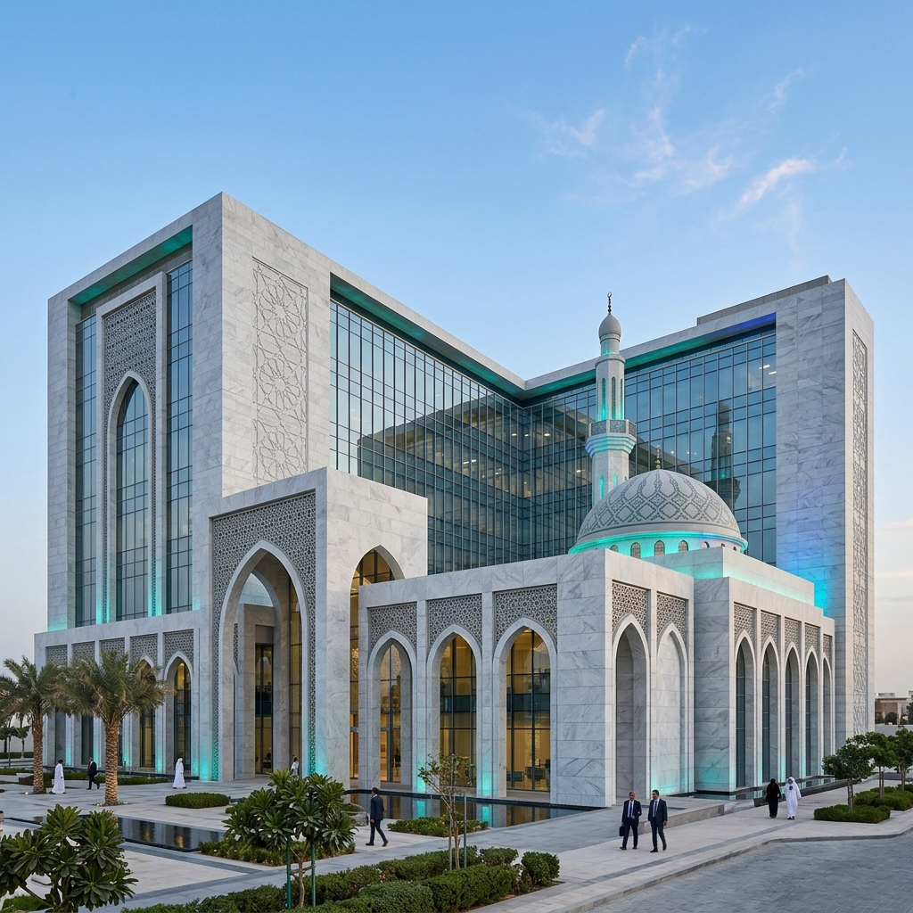

Keadilan (Al-'Adl)
Menjaga keseimbangan hak antara penjual dan pembeli.

Pelajari fondasi etika bisnis dalam Islam secara komprehensif. Dari prinsip muamalah, akhlaq dalam berdagang, hingga implementasi zakat — semuanya berlandaskan Al-Qur'an dan Sunnah Rasulullah ﷺ.
Modul disusun secara sistematis dari pengantar hingga implementasi praktis zakat dalam bisnis.
Dasar-dasar etika bisnis dalam perspektif Islam dan landasan hukumnya.
Hukum dan tata cara transaksi jual-beli yang sesuai syariah.
Perilaku dan budi pekerti mulia seorang pebisnis Muslim.
Kewajiban zakat perdagangan dan distribusi kesejahteraan.
Pelajari setiap modul secara mendalam dengan dalil dan penjelasan komprehensif.
Etika bisnis syariah adalah seperangkat norma dan nilai-nilai moral yang bersumber dari Al-Qur'an dan Sunnah untuk mengatur aktivitas ekonomi dan perdagangan. Islam tidak memisahkan antara kegiatan ibadah dan kegiatan muamalah (sosial-ekonomi).
Dalam pandangan Islam, bisnis bukan sekadar mencari keuntungan material, tetapi juga merupakan bagian dari ibadah kepada Allah SWT. Oleh karena itu, setiap pelaku bisnis Muslim wajib menjaga etika dan moralitas dalam setiap transaksinya.
Menjaga keseimbangan hak antara penjual dan pembeli.
Transparansi dan keterbukaan dalam setiap transaksi.
Menjaga kepercayaan yang diberikan oleh mitra bisnis.
Bisnis harus membawa manfaat bagi masyarakat luas.
Rasulullah ﷺ menekankan pentingnya etika di pasar, sebagai tempat utama bertemunya penjual dan pembeli.
Muamalah adalah cabang ilmu fiqih yang membahas tentang hubungan antar manusia dalam bidang ekonomi dan sosial. Dalam konteks bisnis, muamalah mengatur segala bentuk transaksi seperti jual beli (al-bay'), sewa-menyewa (al-ijārah), kerjasama (asy-syirkah), dan lainnya.
Prinsip utama muamalah adalah bahwa segala bentuk transaksi pada dasarnya diperbolehkan (mubah), kecuali ada dalil yang melarangnya. Hal ini memberikan fleksibilitas bagi umat Islam untuk berinovasi dalam berbisnis selama tidak melanggar ketentuan syariah.
Tidak mengambil keuntungan dari bunga atau riba dalam transaksi.
Menghindari ketidakjelasan dan spekulasi berlebihan dalam akad.
Tidak melakukan perjudian atau spekulasi dalam bisnis.
Setiap transaksi harus didasari kerelaan kedua belah pihak.
Akhlaq (budi pekerti) merupakan fondasi terpenting dalam etika bisnis Islam. Rasulullah ﷺ sendiri diutus untuk menyempurnakan akhlaq manusia, dan beliau memberikan teladan terbaik sebagai pedagang yang jujur dan terpercaya.
Seorang pebisnis Muslim harus menghiasi dirinya dengan sifat-sifat terpuji seperti jujur (shidq), amanah, sabar, dermawan, dan memiliki rasa takut kepada Allah dalam setiap transaksinya. Akhlaq yang baik bukan hanya mendatangkan keberkahan, tetapi juga membangun kepercayaan pelanggan.
Tidak menyembunyikan cacat barang dan transparan dalam kualitas.
Mudah dan murah hati dalam bertransaksi, tidak mempersulit.
Menghormati perjanjian dan komitmen yang telah disepakati.
Memberikan pelayanan terbaik melebihi ekspektasi pelanggan.
Akhlaq mulia menjadi modal sosial terkuat dalam membangun kemitraan bisnis yang berkelanjutan.
Sifat seorang pedagang yang disebut Rasulullah ﷺ akan mendapat rahmat Allah adalah…
Zakat merupakan rukun Islam ketiga yang memiliki dimensi sosial-ekonomi yang sangat kuat. Dalam konteks bisnis, zakat perdagangan (zakāt at-tijārah) wajib dikeluarkan oleh setiap pedagang Muslim yang hartanya telah mencapai nisab dan haul.
Zakat bukan sekadar mengurangi harta, tetapi justru menjadi instrumen pembersihan dan keberkahan rezeki. Allah SWT menjanjikan bahwa harta yang dizakati akan tumbuh dan berkembang, bukan berkurang.
Setara dengan 85 gram emas, dihitung dari aset + piutang - utang.
Wajib dizakati setelah dimiliki selama satu tahun hijriyah.
Dikeluarkan 2,5% dari total aset perdagangan yang telah memenuhi nisab.
Disalurkan kepada golongan yang berhak sesuai QS. At-Taubah: 60.
Berapakah kadar zakat yang wajib dikeluarkan dari harta perdagangan yang telah mencapai nisab?
Contoh penerapan etika bisnis syariah dalam berbagai sektor ekonomi modern.
Industri halal global diproyeksikan mencapai US$ 5 triliun pada 2030. Perdagangan halal tidak hanya mencakup produk makanan, tetapi juga kosmetik, farmasi, fashion, dan pariwisata. Sertifikasi halal menjadi standar kepercayaan konsumen Muslim di seluruh dunia.

Perbankan syariah beroperasi berdasarkan prinsip bagi hasil (mudhārabah), jual beli (murābahah), dan sewa (ijārah) — bukan bunga (riba). Sistem ini menjamin keadilan distribusi keuntungan dan risiko antara bank dan nasabah.
Syirkah (kemitraan/persekutuan) adalah bentuk kerjasama bisnis yang dianjurkan dalam Islam. Nabi Muhammad ﷺ sendiri pernah bermitra dagang sebelum kenabian. Kemitraan berbasis syariah menekankan kejelasan akad, pembagian keuntungan yang adil, dan tanggung jawab bersama.
Kumpulan dalil Al-Qur'an, Hadits, dan sumber referensi pendukung modul pembelajaran.
Modul Pembelajaran Etika Bisnis Syariah ini disusun sebagai proyek akhir Ujian Akhir Semester (UAS) mata kuliah Pendidikan Agama Islam. Modul ini bertujuan untuk memberikan pemahaman komprehensif tentang prinsip-prinsip etika dalam berbisnis menurut perspektif Islam.
Materi disajikan secara interaktif dengan dilengkapi dalil-dalil dari Al-Qur'an dan Hadits, studi kasus kontemporer, serta kuis evaluasi untuk mengukur pemahaman pembaca.
NIM: K3525006 — Penyusun modul
Program Studi Pendidikan — Surakarta
Semester Genap — Proyek Akhir UAS PAI
Membangun ekosistem bisnis yang berlandaskan keadilan, keberkahan, dan kemaslahatan umat.